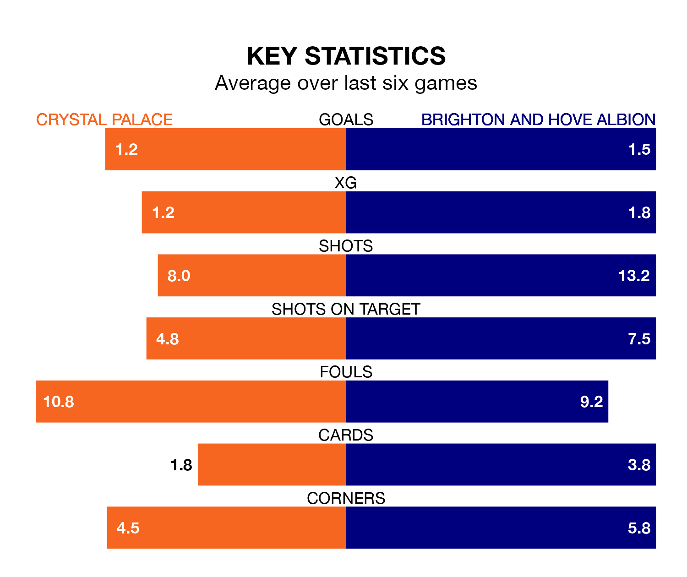

Crystal Palace are on a terrible run ahead of hosting Brighton and Hove Albion at Selhurst Park on Thursday, with just two points collected from their last six games.
The Eagles have picked up two draws and four losses in their last six Premier League games, and face a Brighton side whose last six games have brought two wins and two draws.
In the last 10 years, Palace and Brighton have played each other on 13 occasions. Palace won three of them, Brighton four, and they drew six times.
On average, the Eagles scored 1.1 goals and Brighton 1.2 in those matches.
Their last meeting was on March 15, when Brighton won 1-0 at home.
With 17 goals in 17 games so far this season, Palace are scoring at below the league average rate with 1.0 goals per game. And they are conceding at an average rate, letting in 25 goals at a rate of 1.5 per game.
Brighton, meanwhile, are above average scorers, with 1.9 goals per game, compared to a league average of 1.5. They have conceded 1.8 goals per game.
In Sam Johnstone, the Eagles can rely on one of the league's safest pair of hands. He has kept five clean sheets in his 16 appearances this season in the Premier League.
Albion, meanwhile, are yet to keep a clean sheet this season.
The hosts are 16th in the table after 17 games, of which they have won four and drawn five, earning 17 points.
The away side are seven places ahead of Palace in ninth, with seven wins and five draws putting them on 26 points.
Palace's last match was on Saturday, a 2-2 draw against Manchester City, with Jean-Philippe Mateta and Michael Olise getting the goals for the Eagles.
Brighton lost 2-0 against Arsenal last time out, on Sunday.
Thursday's match will be refereed by John Brooks, who has taken charge of 10 Premier League games so far this season, issuing four red cards and booking 46 players. He has awarded three penalties.
The last Palace game Brooks refereed was a 1-0 away win against Sheffield United on August 12. His last Brighton match was their 1-1 draw at home against Sheffield United on November 12.
